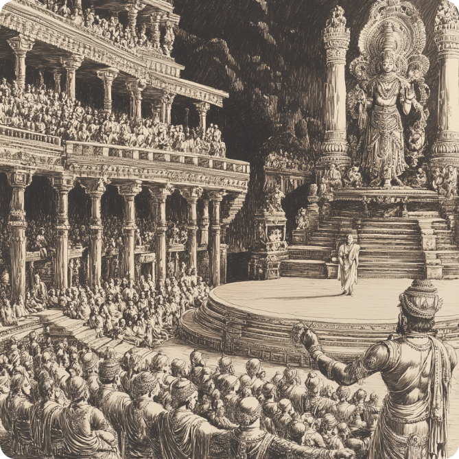

Afterward, Brahma built a special theater, Natya Griha, where gods could enjoy the performances without interruption. When the demons asked why they were left out, Brahma explained that Natya Veda was for everyone—gods, demons, and humans. It was meant to teach life lessons through stories, dance, and music for all beings.
Done ›